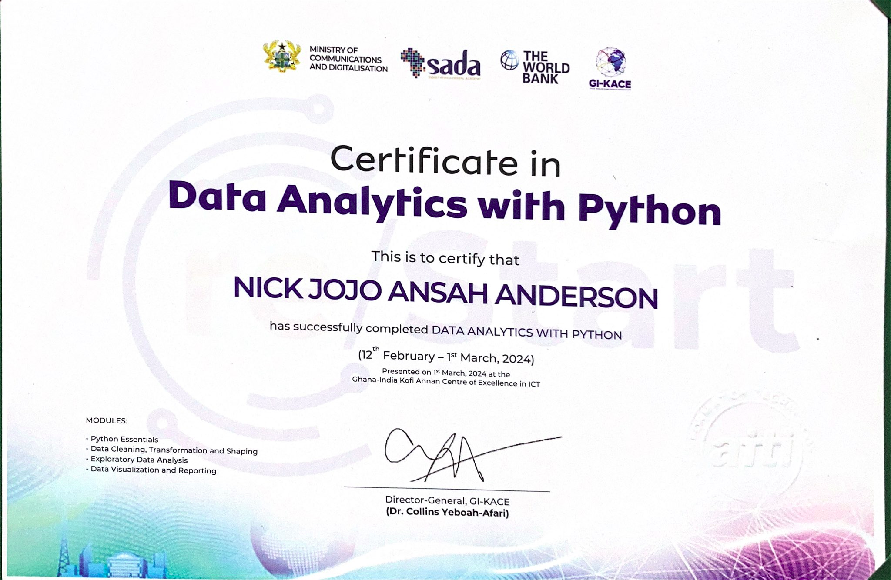
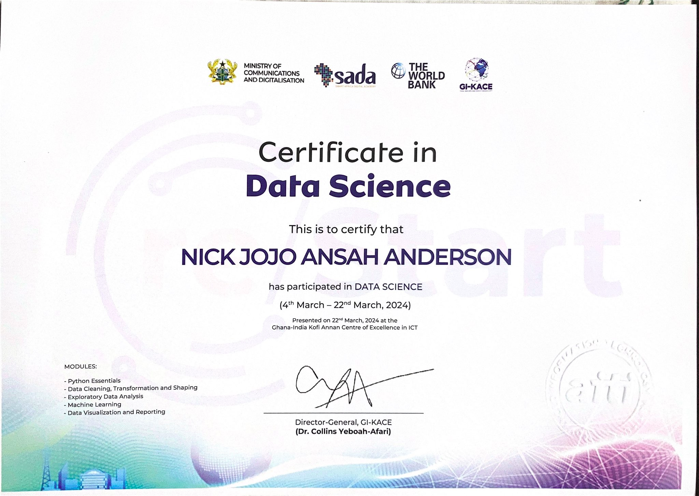
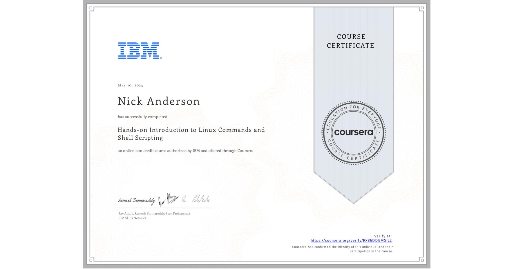
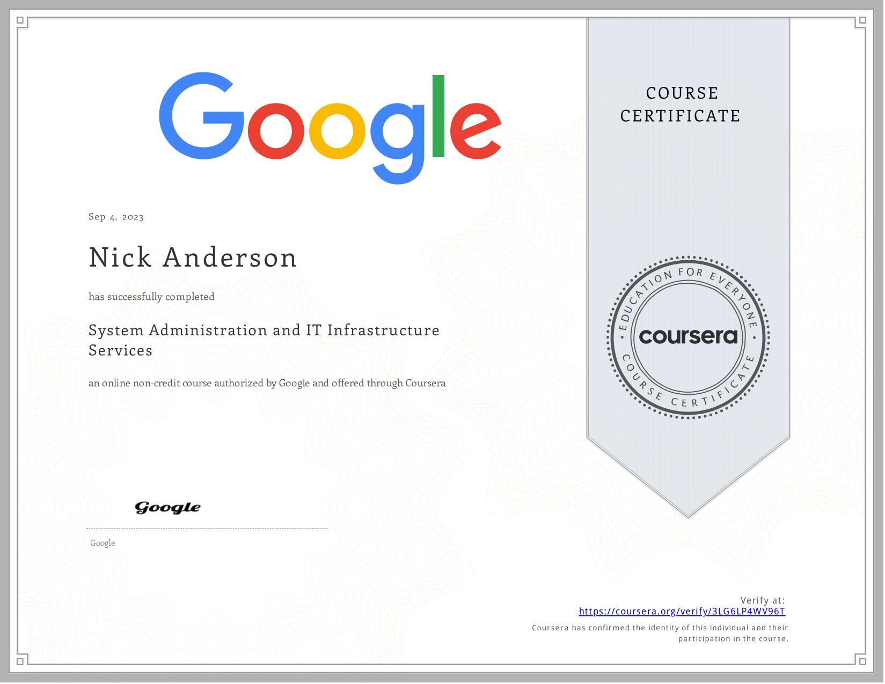

Welcome
Projects
Certifications
GitHub
LinkedIn
My Certifications
Certificate in Data Analytics with Python

.
Certificate in Data Sceince

.
Certificate in Linux Commands and Shell Scripting

.
Certificate in System Administration and IT Infrastructure Services

.
© 2024. All rights reserved
Designed by:
Nick Anderson